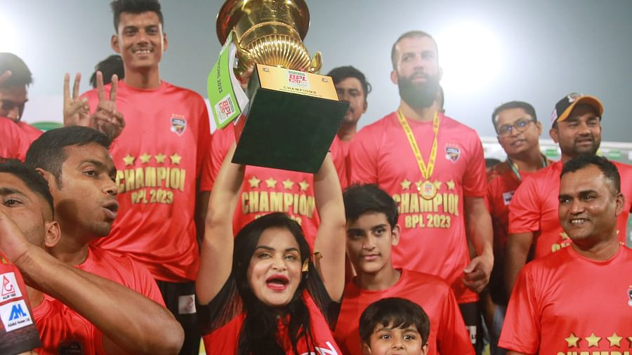
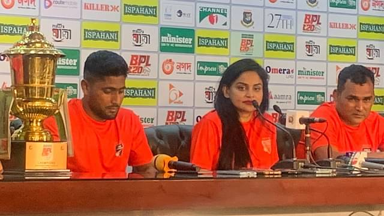

Home
About
Service
web design
html
pigma to css
Web development
html
sahed
blog
Contact
All option
loging form
নাফিসার কুমিল্লা ভিক্টোরিয়ানস যেখানে আলাদা

২০১৫ সালে বিপিএলে এসে এখন পর্যন্ত ছয়টা আসর খেলেছে কুমিল্লা ভিক্টোরিয়ানস। এবার নিয়ে চ্যাম্পিয়ন হয়েছে চারবার। কীভাবে কুমিল্লার এই সাফল্য? অন্য ফ্র্যাঞ্চাইজিগুলোর চেয়ে কুমিল্লা কোথায় আলাদা? মিরপুর শেরেবাংলা স্টেডিয়ামে বিপিএলে চতুর্থ শিরোপা জয়ের পর গতকাল রাতে অধিনায়ক ইমরুল কায়েস ও কোচ মোহাম্মদ সালাউদ্দিনের সঙ্গে সংবাদ সম্মেলনে আসেন কুমিল্লা ভিক্টোরিয়ানসের চেয়ারপারসন নাফিসা কামালও। প্রশ্নটা রাখা হয়েছিল তাঁর কাছেই। নাফিসা বলেছেন, অন্য ফ্র্যাঞ্চাইজিগুলোর সঙ্গে অনেক পার্থক্যই দেখেন তিনি কুমিল্লার, বিশেষ করে বিপিএলের সাম্প্রতিক আসরগুলোতে। বিপিএলে কুমিল্লার উপস্থিতি অনেক গুরুত্বপূর্ণ উল্লেখ করে তিনি বলেন, ‘বিদেশি খেলোয়াড় আনার কথা যদি বলি, শুধু টাকা থাকলেই যে বিদেশি খেলোয়াড় পাওয়া যাবে, তা নয়। আমরা বিদেশি খেলোয়াড়দের কাছ থেকে অনেক সাড়া পাই। তারা বিপিএলে আসতে চায়। অন্য দলের তুলনায় অনেক আগে আমাদের সঙ্গে যোগাযোগ করে। আমি অক্টোবর মাসে খেলোয়াড় সাইন করেছি, এটা অন্য দলগুলো হয়তো ভাবতেও পারবে না। আমরা অনেক লম্বা চিন্তা করি এবং আমাদের নেটওয়ার্ক এখন অনেক শক্ত। আজকেই যেমন আমি আগামীবারের জন্য দুজন খেলোয়াড়ের সঙ্গে কথা বলেছি।’
এ ক্ষেত্রে অধিনায়ক ইমরুল কায়েস এবং কোচ সালাউদ্দিনকেও কৃতিত্ব দিয়েছেন তিনি, ‘আমি একা নই। কোচ, অধিনায়ক দুজনই আমাদের সঙ্গে ২০১৫ সাল থেকে আছেন। সুনীল নারাইনও ২০১৫ সাল থেকে আছে। শুধু দেশি-বিদেশি খেলোয়াড় নয়; কোচিং স্টাফ, টিম স্টাফ সবাই অনেক দিন থেকে এক সঙ্গে আছে। এটা ব্যতিক্রম। টিম ব্র্যান্ডিং, বিপিএলে আমাদের উপস্থিতি অনেক শক্ত।’ এবারের বিপিএলে কোনো দলেই বিদেশি খেলোয়াড়েরা নিয়মিত ছিলেন না। ব্যতিক্রম নয় কুমিল্লা ভিক্টোরিয়ানসও। তার মধ্যেই কুমিল্লা সুনির্দিষ্ট পরিকল্পনা নিয়ে এগিয়েছে। ‘এবার ধারাবাহিকভাবে সব দল বিদেশি খেলোয়াড় নিয়ে সংগ্রাম করছে। বিদেশি খেলোয়াড়েরা প্রতিদিন আসা-যাওয়া করেছে। কিন্তু আমরা প্রথম থেকে জানি কোন সময় আমাদের কোন খেলোয়াড় আসবে, যাবে। সে জন্য আমাদের চিন্তাটা অন্য দিকে যায়নি। খেলার মধ্যেই ছিল। আমাদের অ্যাজেন্ডা একটাই ছিল, কাপ জিততে হবে’—বলেছেন কুমিল্লা ভিক্টোরিয়ানসের মালিক। আর এ কারণেই প্রথম তিন ম্যাচ হারার পরও দলের ওপর থেকে বিশ্বাস হারাননি তিনি। এরপর তো টানা ১১ ম্যাচ জিতে চ্যাম্পিয়নই হলো কুমিল্লা। নাফিসাও বলছিলেন, ‘আমাদের বিশ্বাস ছিল চ্যাম্পিয়ন হব। তবে কীভাবে হব, সেটা নিয়ে নতুন করে পরিকল্পনা করতে হয়েছে। চট্টগ্রামে সবাই বসলাম। কী করলে লক্ষ্য পূরণ হবে, সেটা নিয়ে কাজ করেছি।’
